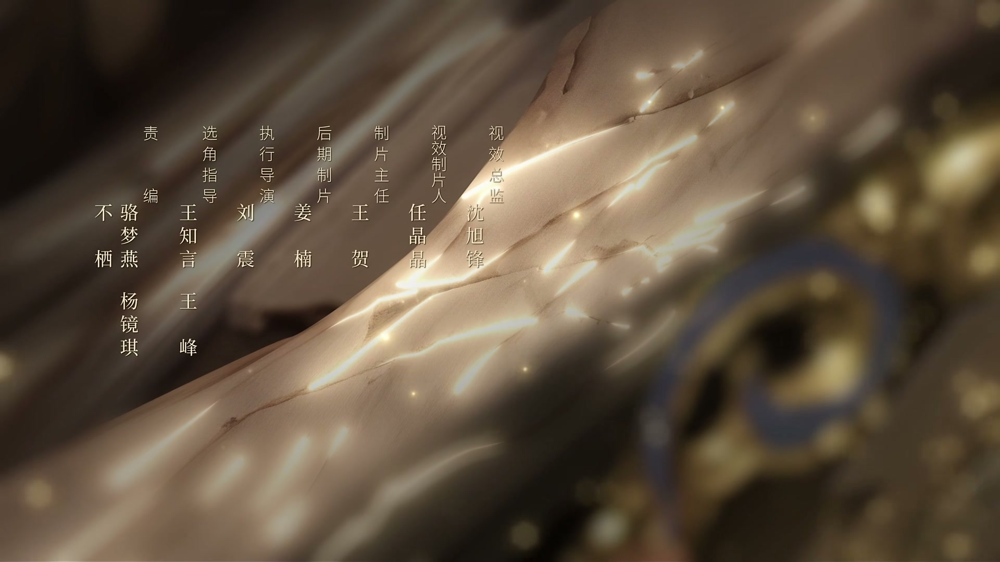
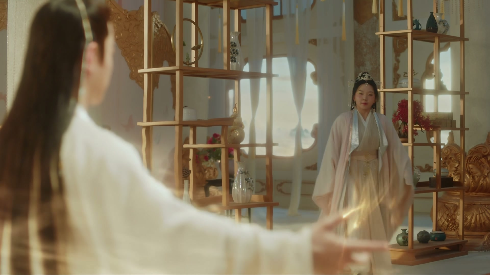
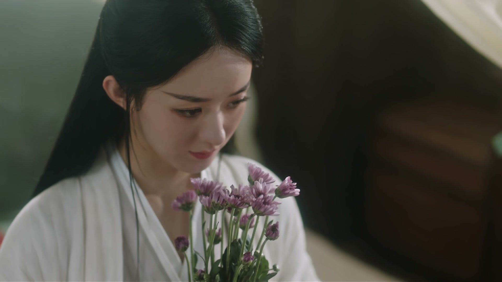
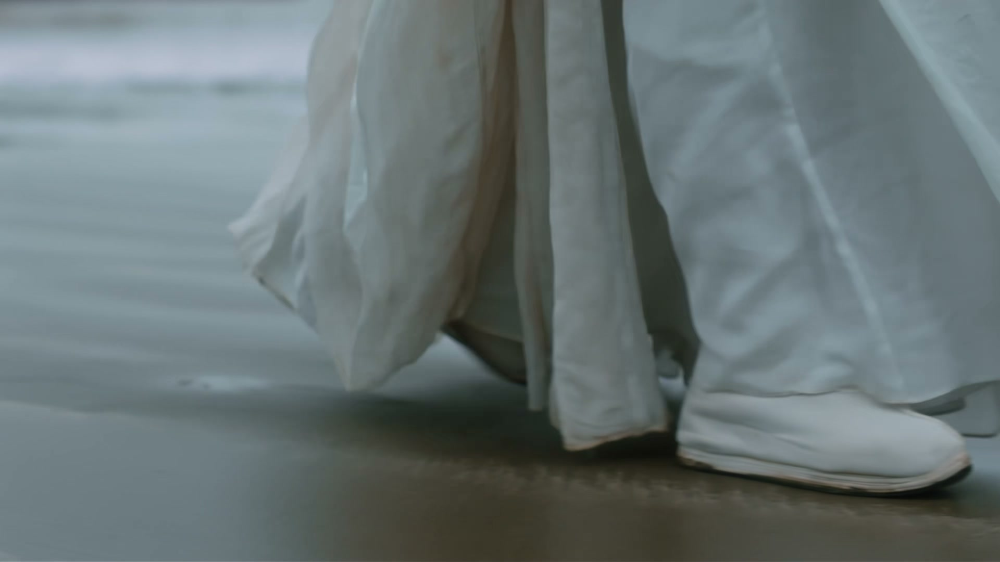
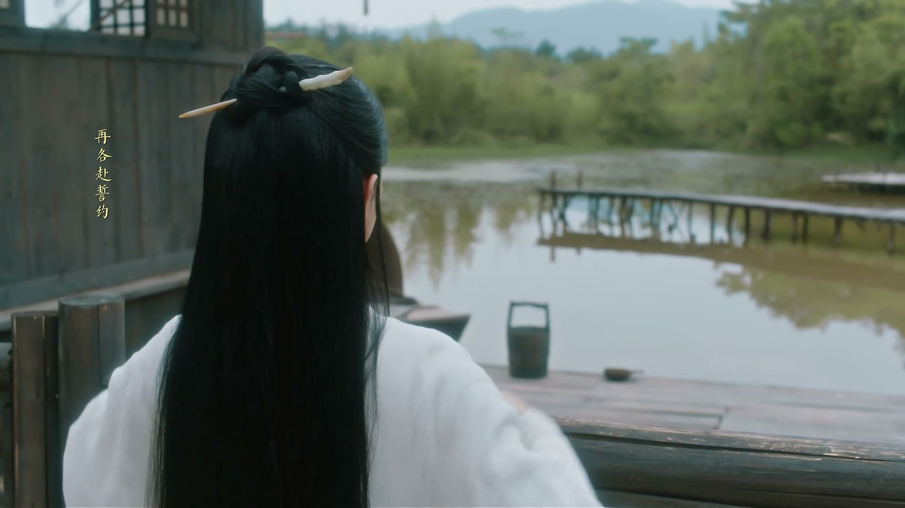
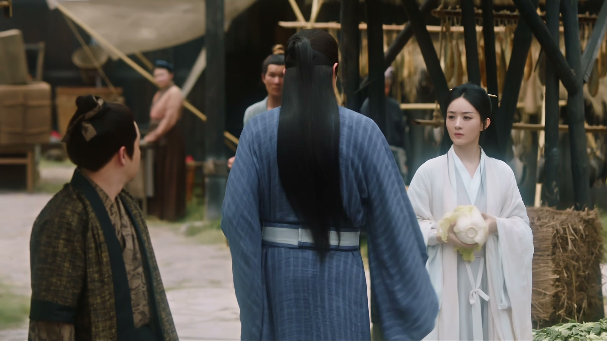
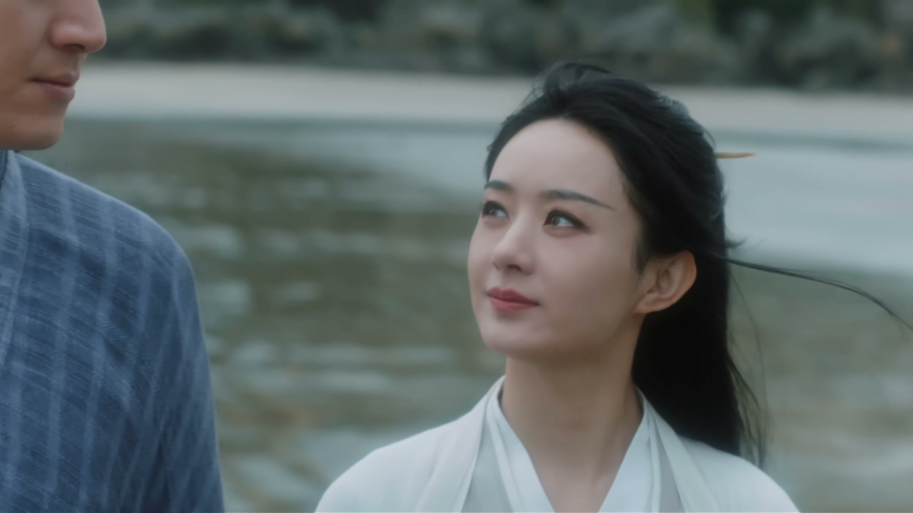
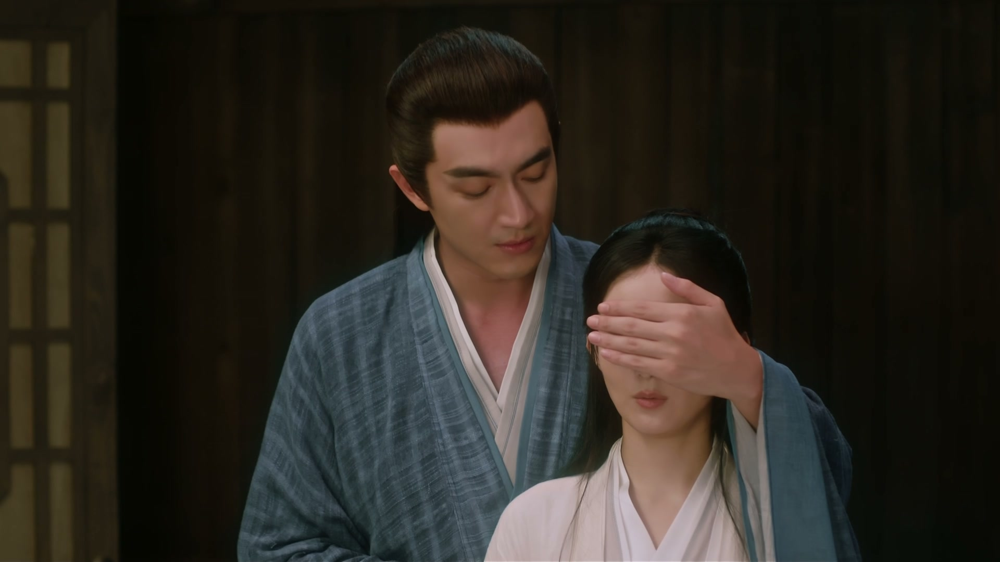

真正的在意，从不为回报
情境：行止救沈璃、养她、送她走，龙王问他何苦，他答「我本来就不是为了她的感谢才救她」。
遇到这种情况，可以这样做
- 付出若是为了兑换感激，就会变成算计。
- 在意一个人，是看她好，而非让她欠你。
- 放手成全，有时比强留更见深情。

Drama Recap · 剧情图文总结
第 28 集 · 凤凰归身
沈璃伤愈回灵界，行止在渔屋独守一句「她不属于这里」；碧苍王府小桃拆穿墨方的叛徒真身，施箜跪求开罪之恩。灵界朝堂剑拔弩张，沈璃却在深宫夜里落泪——「原来爱一个人，真的可以这么痛苦」。
沈璃伤愈，在海边与行止道别，回灵界。渔屋里人去楼空，行止对东海龙王说：「她本不属于这里。」灵界这边，碧苍王府暗流涌动——小桃追查墨方多日，终于拆穿了他的叛徒真身；施箜含泪跪求沈璃开罪之恩，说岄儿是被墨方拖下水的。朝堂之上，沈木月试探、灵尊质问，沈璃夹在旧情与新仇之间，夜里落下一滴泪：「原来爱一个人，真的可以这么痛苦。」
第 28 集，从海边的道别开始。沈璃伤好起身：「于公子，我该走了。」行止送她：「路上小心，保重。」沈璃道：「那我回去了。」她转身离开，没有回头——因为她知道，身后的人已经替她把门前的路看了很久很久。
剧里的鸡毛蒜皮，往往是人生的缩影。这些情节不只是故事——当你在现实中遇到同样的处境时，它们能提醒你：先做什么、别做什么、怎么说才有效。
情境：行止救沈璃、养她、送她走，龙王问他何苦，他答「我本来就不是为了她的感谢才救她」。
情境：沈璃明知墨方是叛徒却一直不点破，因为她知道「只要我装作不知道，这朝堂之上就有一份稳定」。
情境：灵尊没有听风就是雨，而是先问沈璃「你觉得小桃说的有几分是真」，得到确认后才下令清算。
情境：小桃见不得沈璃受委屈，竟想替她认罪。沈璃失笑：「你替本王认什么罪？」
情境：凤来只剩一缕残魂，化作凤凰守着她，最后一夜现身道别：「舅舅会一直在天上看着你。」
情境：碧苍王卸下盔甲，在深宫里落泪：「原来爱一个人，真的可以这么痛苦。」
沈璃伤好起身，站在门口向于公子道别：「于公子，我该走了。」行止只叮嘱一句：「路上小心，保重。」沈璃应道：「那我回去了。」
她转身离开，没有回头。海风把她的红衣吹得猎猎作响，她走了几步，又停下来——终究还是没有回头看他一眼，怕一回头，就走不成了。
行止站在门前望着她的背影，一直没有说话，直到那抹红色消失在海岸线上。渔屋这段日子里的照料与试探，成了两个人心里最安静、也最舍不得翻开的秘密。
关键台词 · KEY QUOTES

渔屋里只剩下行止一人，空荡荡的，连桌上的碗筷都还摆着。东海龙王战战兢兢地凑上来探问：「神君，这王妃……哦不，这姑娘……她这就走了？」
行止望着沈璃离去的方向，声音很轻，像怕惊动什么：「她不属于这里。她走了。」那句「不属于」，不知是在说渔屋，还是在说他自己。
龙王不解：「可是，既然这样，神君您……您当初又何苦要救她呢？」行止答：「我本来就不是为了她的感谢才救她。」一句「本来就不是」，把上古神君的深情藏得严严实实。
关键台词 · KEY QUOTES

沈璃回到灵界，碧苍王府的院子里已跪了一地人，哭声一片。施箜扑通一声跪在最前头，连连磕头：「碧苍王，求你开恩，求你开恩！」
沈璃让人把岄儿叫出来当面对质。小小的岄儿吓得直往娘亲怀里躲，施箜一把抱住儿子哭诉：「都是墨方！那日是他挑唆岄儿去灵界杀沈璃，岄儿是被他拖下水的啊！」
岄儿还懵懂着，仰头喊：「娘亲？」施箜的眼泪一个劲地掉：「他还这么小，他什么都不知道啊！」沈璃看着这对母子，一时没有说话。
关键台词 · KEY QUOTES

小桃再也忍不下去，当众揭开真相：「碧苍王！那个墨方就是叛徒！他早就是苻生盟的人！」一句话出口，满堂的窃窃私语全被压了下去。
满堂哗然，众人面面相觑，空气仿佛都凝固了片刻，沈璃却只淡淡一句：「我早就知道了。」小桃又惊又急：「你既然知道，为什么还要装作不知道？」
沈璃的目光扫过朝堂：「因为我是碧苍王。作为碧苍王，只要我装作不知道，这朝堂之上就有一份稳定。」一句话，道尽一个王者的权衡与孤独。
关键台词 · KEY QUOTES

灵尊单独叫来沈璃，屏退左右，开口便问：「你觉得小桃说的，有几分是真？」沈璃不闪不避，直视着她：「小桃说的，句句都是真的。」
灵尊闻言色变，沉默良久，才缓缓道：「既然他要背叛，那他就该付出代价。」这话像一纸判决，落在沈璃心上，也落在灵界的朝堂上。
沈璃抬头看她：「灵尊的意思是？」灵尊没有直接回答，只留一句「我会处理的」。这份君臣之间的默契与试探，让空气都绷紧了几分。
关键台词 · KEY QUOTES
小桃心里过意不去，自责害沈璃为墨方的事烦心，饭也吃不下。沈璃把她叫到跟前，轻声说：「小桃，我身边除了你，也没有几个能说上话的人了。」
小桃红着眼眶，声音直发颤：「王爷，要不……要不我替你去认罪吧！」沈璃失笑：「你替本王认什么罪？本王做错了什么，要你一个丫头来顶罪？」
「可……可是我不能看着你受委屈！」沈璃拍拍她的手，语气平淡：「行了，本王受的委屈还少吗？该来的总会来，躲也躲不掉。」主仆一场，患难里见真心。
关键台词 · KEY QUOTES

灵界朝堂之上，沈木月率先发难，字字诛心：「碧苍王，你身为灵界之王，此次却私自出界、勾结苻生盟，视国法于无物，你可知罪？」
沈璃冷眼看他，声音不高却字字带刺：「沈木月，你张口闭口就要给本王定罪，是急着为谁开路？」一句话出口，朝堂之上落针可闻，点破他藏得极深的心思。
沈木月不死心：「你……」沈璃打断他：「本王与苻生盟之间的恩怨，本王自会与灵尊交代，就不劳你费心了。」朝堂之上，一王一臣针锋相对，火药味十足。
关键台词 · KEY QUOTES

小桃跪在王府正厅，头埋得很低，声音却坚定：「王爷，让我去吧！我在您身边这么多年，也该替您分忧了。」沈璃看着她，神色复杂：「你要去做什么？」
小桃攥紧拳头，眼眶泛红：「那个墨方……我早就想亲手把他抓回来了！他害您吃这么多苦，还害得施箜姐姐一家不得安宁，这笔账必须算！」
沈璃沉默片刻：「你一个人去，太危险了。」小桃却固执地跪在地上：「王爷，求您让我去！」沈璃望着她倔强的眼睛，最终缓缓点了点头。
她不是不担心小桃，只是她心里明白，小桃与墨方之间那桩无人知晓的旧事、那个埋了多年的心结，总该有个了断，而这件事只能小桃自己去。
关键台词 · KEY QUOTES
沈璃在后山独自练枪，正练得入神，忽见一只凤凰从树梢掠过。她怔了怔，那只凤凰竟绕着她盘旋了三圈，最后轻轻落在她肩头，蹭了蹭她的脸颊。
「是你吗？」沈璃伸手，凤凰在她掌心蹭了蹭。她眼眶发热：「你还在守着我对不对？就算变成了这幅模样，你也还是在守着我对不对？」
——那是凤来的执念。为了救沈璃耗尽神力的他，即便只剩下一缕神识，也固执地化作凤凰，日日守在她身边，远远看着她，不肯离开半步。
沈璃把它轻轻拢进怀里，声音哽咽：「好，那我就带着你，一起去，去哪儿都一起。」天边晚霞如火，一人一鸟相依的画面，像极了多年以前共度的旧时光。
关键台词 · KEY QUOTES

深夜里，那只凤凰在沈璃床边缓缓现了人形——竟然是凤来的一缕残魂。他望着惊醒的沈璃，眼里满是疼惜与不舍，轻声道：「沈璃，你长大了。」
沈璃扑过去，一把抱住他：「舅舅！」凤来抚着她的头，声音温和：「我这一缕残魂，还能陪你这最后一段路。璃儿，听舅舅的话，好好活着。」
「有些路，舅舅只能陪你走到这儿了。往后，你要自己走了。」沈璃死死攥着他的衣角，像小时候一样：「我不要自己走！你留下来！」
凤来却只是笑着摇头：「傻孩子，舅舅会一直在天上看着你，护着你。」天亮时分，那一缕残魂，终究散在了晨光里，只留沈璃一个人站在原地。
关键台词 · KEY QUOTES
夜深人静，沈璃独坐深宫，烛火明灭不定。她一遍遍想着海边那个渔夫，想着行止，想着他说的那句「路上小心，保重」，心口便一阵发闷。
四下寂静，她突然苦笑出声：「沈璃啊沈璃，你什么时候变成了这样？」一滴泪无声滑落，砸在手背上：「原来爱一个人，真的可以这么痛苦。」
她想起渔屋里他说过的每一句话，想起他忍着痛替她换药的手，想起「不必控制，可以肆意妄为」——可如今回了灵界，她又要做回那个不能哭、不能软弱的碧苍王。
她抬眼望出去，远处的灵界灯火通明、人声渐起，她这里却安静得只剩烛火噼啪作响，一个人的影子被摇曳的灯影拉得格外孤单又漫长。
而此刻的天界止水阁里，行止也正凭栏望着人间，望着那间渔屋所在的方向，心里一遍遍默念着她的名字，在同一片月光下，一坐便是彻夜未眠。
关键台词 · KEY QUOTES
本集伤愈回灵界，处置墨方叛徒案，放小桃去追查墨方，又与凤来残魂道别；深夜里落下「爱一个人真的很痛苦」的眼泪。
海边送别沈璃，独守渔屋，对龙王说「她不属于这里」；天界止水阁里彻夜望着人间。
当众揭开墨方叛徒真身，见不得沈璃受委屈，执意请命去追查墨方。
向沈璃确认小桃所言虚实，定下「既然他要背叛，那他就该付出代价」的清算基调。
跪求沈璃开恩，哭诉儿子岄儿是被墨方挑唆拖下水的，母子情深的戏码让人动容。
朝堂上发难，给沈璃扣「私自出界、勾结苻生盟」的罪名，被沈璃一句「急着为谁开路」怼了回去。
为救沈璃耗尽神力，只剩一缕神识化作凤凰守在她身边，最后一夜现身道别，天亮散在晨光里。
海边送别后，行止对龙王说的那句话——把上古神君的不舍与克制演到了极致。
当众揭开「墨方就是叛徒」，沈璃却淡淡一句「我早就知道了」，一句「朝堂之上就有一份稳定」，尽显王者担当。
凤来残魂化作凤凰绕她盘旋，最后一夜以人形现身道别「往后，你要自己走了」，是全集最催泪的一幕。
卸下盔甲的碧苍王在深夜里落泪：「原来爱一个人，真的可以这么痛苦。」赵丽颖的哭戏是全集的情绪高潮。
小桃要替她认罪，沈璃失笑反问，主仆二人患难与共的温情，在紧张的朝堂戏里格外难得。
灵尊定下「既然他要背叛，那他就该付出代价」的基调，小桃也已请命去追——墨方的结局将在后续揭开。
凤来残魂道别「舅舅会一直在天上看着你」，他与沈璃的血脉秘密（沈璃身世与凤凰血脉的来源），仍是后续的关键悬念。
行止嘴上说沈璃不属于渔屋，可天界止水阁里他彻夜望人间——这份越陷越深的感情，注定与神君的身份、天刑的代价正面相撞。
沈璃放小桃去追墨方，隐约透露小桃「也该有个了断了」，小桃与墨方之间不为人知的过往将浮出水面。
朝堂上急着给沈璃定罪的沈木月，其「为谁开路」的用意成谜，灵界朝堂的暗线就此埋下。